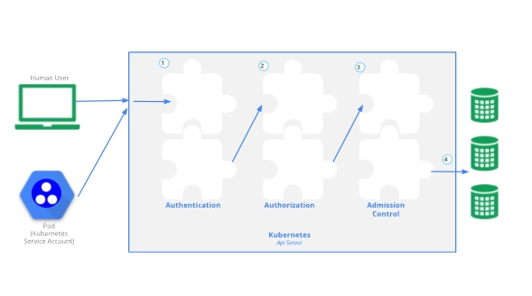
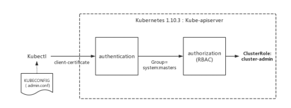
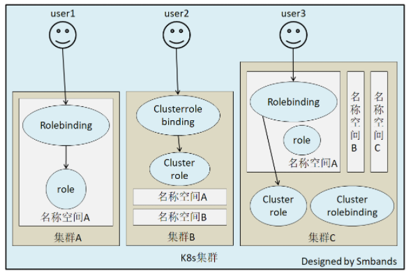

Kubernetes认证与授权
APIService安全控制

- Authentication：身份认证
- 这个环节它面对的输入是整个
<font style="color:rgb(51, 51, 51);background-color:rgb(243, 244, 244);">http request</font>，负责对来自client的请求进行身份校验，支持的方法包括: - client证书验证（https双向验证）
<font style="color:rgb(51, 51, 51);background-color:rgb(243, 244, 244);">basic auth</font>- 普通token
<font style="color:rgb(51, 51, 51);background-color:rgb(243, 244, 244);">jwt token</font>(用于serviceaccount)- APIServer启动时，可以指定一种Authentication方法，也可以指定多种方法。如果指定了多种方法，那么APIServer将会逐个使用这些方法对客户端请求进行验证， 只要请求数据通过其中一种方法的验证，APIServer就会认为Authentication成功；
- 使用kubeadm引导启动的k8s集群的apiserver初始配置中，默认支持
<font style="color:rgb(51, 51, 51);background-color:rgb(243, 244, 244);">client证书</font>验证和<font style="color:rgb(51, 51, 51);background-color:rgb(243, 244, 244);">serviceaccount</font>两种身份验证方式。 证书认证通过设置<font style="color:rgb(51, 51, 51);background-color:rgb(243, 244, 244);">--client-ca-file</font>根证书以及<font style="color:rgb(51, 51, 51);background-color:rgb(243, 244, 244);">--tls-cert-file</font>和<font style="color:rgb(51, 51, 51);background-color:rgb(243, 244, 244);">--tls-private-key-file</font>来开启。 - 在这个环节，apiserver会通过client证书或
<font style="color:rgb(51, 51, 51);background-color:rgb(243, 244, 244);">http header</font>中的字段(比如serviceaccount的<font style="color:rgb(51, 51, 51);background-color:rgb(243, 244, 244);">jwt token</font>)来识别出请求的<font style="color:rgb(51, 51, 51);background-color:rgb(243, 244, 244);">用户身份</font>，包括”user”、”group”等，这些信息将在后面的<font style="color:rgb(51, 51, 51);background-color:rgb(243, 244, 244);">authorization</font>环节用到。
- 这个环节它面对的输入是整个
- Authorization：鉴权，你可以访问哪些资源
- 这个环节面对的输入是
<font style="color:rgb(51, 51, 51);background-color:rgb(243, 244, 244);">http request context</font>中的各种属性，包括：<font style="color:rgb(51, 51, 51);background-color:rgb(243, 244, 244);">user</font>、<font style="color:rgb(51, 51, 51);background-color:rgb(243, 244, 244);">group</font>、<font style="color:rgb(51, 51, 51);background-color:rgb(243, 244, 244);">request path</font>（比如：<font style="color:rgb(51, 51, 51);background-color:rgb(243, 244, 244);">/api/v1</font>、<font style="color:rgb(51, 51, 51);background-color:rgb(243, 244, 244);">/healthz</font>、<font style="color:rgb(51, 51, 51);background-color:rgb(243, 244, 244);">/version</font>等）、<font style="color:rgb(51, 51, 51);background-color:rgb(243, 244, 244);">request verb</font>(比如：<font style="color:rgb(51, 51, 51);background-color:rgb(243, 244, 244);">get</font>、<font style="color:rgb(51, 51, 51);background-color:rgb(243, 244, 244);">list</font>、<font style="color:rgb(51, 51, 51);background-color:rgb(243, 244, 244);">create</font>等)。 - APIServer会将这些属性值与事先配置好的访问策略(
<font style="color:rgb(51, 51, 51);background-color:rgb(243, 244, 244);">access policy</font>）相比较。APIServer支持多种<font style="color:rgb(51, 51, 51);background-color:rgb(243, 244, 244);">authorization mode</font>，包括<font style="color:rgb(51, 51, 51);background-color:rgb(243, 244, 244);">Node、RBAC、Webhook</font>等。 - APIServer启动时，可以指定一种
<font style="color:rgb(51, 51, 51);background-color:rgb(243, 244, 244);">authorization mode</font>，也可以指定多种<font style="color:rgb(51, 51, 51);background-color:rgb(243, 244, 244);">authorization mode</font>，如果是后者，只要Request通过了其中一种mode的授权， 那么该环节的最终结果就是授权成功。在较新版本kubeadm引导启动的k8s集群的apiserver初始配置中，<font style="color:rgb(51, 51, 51);background-color:rgb(243, 244, 244);">authorization-mode</font>的默认配置是<font style="color:rgb(51, 51, 51);background-color:rgb(243, 244, 244);">”Node,RBAC”</font>。
- 这个环节面对的输入是
- Admission Control：准入控制，一个控制链(层层关卡)，偏集群安全控制、管理方面。为什么说是安全相关的机制？
- 以NamespaceLifecycle为例， 该插件确保处于Termination状态的Namespace不再接收新的对象创建请求，并拒绝请求不存在的Namespace。该插件还可以防止删除系统保留的Namespace:default，kube-system，kube-public。
- NodeRestriction， 此插件限制kubelet修改Node和Pod对象，这样的kubelets只允许修改绑定到Node的Pod API对象，以后版本可能会增加额外的限制 。
为什么我们执行命令kubectl命令，可以直接管理k8s集群资源？
kubectl的认证授权¶
kubectl的日志调试级别：
| 信息 | 描述 |
|---|---|
| v=0 | 通常，这对操作者来说总是可见的。 |
| v=1 | 当您不想要很详细的输出时，这个是一个合理的默认日志级别。 |
| v=2 | 有关服务和重要日志消息的有用稳定状态信息，这些信息可能与系统中的重大更改相关。这是大多数系统推荐的默认日志级别。 |
| v=3 | 关于更改的扩展信息。 |
| v=4 | 调试级别信息。 |
| v=6 | 显示请求资源。 |
| v=7 | 显示 HTTP 请求头。 |
| v=8 | 显示 HTTP 请求内容。 |
| v=9 | 显示 HTTP 请求内容，并且不截断内容。 |
| YAML | |
|---|---|
<font style="color:rgb(51, 51, 51);background-color:rgb(243, 244, 244);">kubeadm init</font>启动完master节点后，会默认输出类似下面的提示内容：
| YAML | |
|---|---|
这些信息是在告知我们如何配置<font style="color:rgb(51, 51, 51);background-color:rgb(243, 244, 244);">kubeconfig</font>文件。按照上述命令配置后，master节点上的<font style="color:rgb(51, 51, 51);background-color:rgb(243, 244, 244);">kubectl</font>就可以直接使用<font style="color:rgb(51, 51, 51);background-color:rgb(243, 244, 244);">$HOME/.kube/config</font>的信息访问<font style="color:rgb(51, 51, 51);background-color:rgb(243, 244, 244);">k8s cluster</font>了。 并且，通过这种配置方式，<font style="color:rgb(51, 51, 51);background-color:rgb(243, 244, 244);">kubectl</font>也拥有了整个集群的管理员(root)权限。
很多K8s初学者在这里都会有疑问：
- 当
<font style="color:rgb(51, 51, 51);background-color:rgb(243, 244, 244);">kubectl</font>使用这种<font style="color:rgb(51, 51, 51);background-color:rgb(243, 244, 244);">kubeconfig</font>方式访问集群时，<font style="color:rgb(51, 51, 51);background-color:rgb(243, 244, 244);">Kubernetes</font>的<font style="color:rgb(51, 51, 51);background-color:rgb(243, 244, 244);">kube-apiserver</font>是如何对来自<font style="color:rgb(51, 51, 51);background-color:rgb(243, 244, 244);">kubectl</font>的访问进行身份验证(<font style="color:rgb(51, 51, 51);background-color:rgb(243, 244, 244);">authentication</font>)和授权(<font style="color:rgb(51, 51, 51);background-color:rgb(243, 244, 244);">authorization</font>)的呢？ - 为什么来自
<font style="color:rgb(51, 51, 51);background-color:rgb(243, 244, 244);">kubectl</font>的请求拥有最高的管理员权限呢？
查看<font style="color:rgb(51, 51, 51);background-color:rgb(243, 244, 244);">/root/.kube/config</font>文件：
前面提到过apiserver的authentication支持通过<font style="color:rgb(51, 51, 51);background-color:rgb(243, 244, 244);">tls client certificate、basic auth、token</font>等方式对客户端发起的请求进行身份校验， 从kubeconfig信息来看，kubectl显然在请求中使用了<font style="color:rgb(51, 51, 51);background-color:rgb(243, 244, 244);">tls client certificate</font>的方式，即客户端的证书。
证书base64解码：
$ echo xxxxxxxxxxxxxx |base64 -d > kubectl.crt
说明在认证阶段，<font style="color:rgb(51, 51, 51);background-color:rgb(243, 244, 244);">apiserver</font>会首先使用<font style="color:rgb(51, 51, 51);background-color:rgb(243, 244, 244);">--client-ca-file</font>配置的CA证书去验证kubectl提供的证书的有效性,基本的方式 ：
除了认证身份，还会取出必要的信息供授权阶段使用，文本形式查看证书内容：
认证通过后，提取出签发证书时指定的CN(Common Name),<font style="color:rgb(51, 51, 51);background-color:rgb(243, 244, 244);">kubernetes-admin</font>，作为请求的用户名 (User Name), 从证书中提取O(Organization)字段作为请求用户所属的组 (Group)，<font style="color:rgb(51, 51, 51);background-color:rgb(243, 244, 244);">group = system:masters</font>，然后传递给后面的授权模块。
kubeadm在init初始引导集群启动过程中，创建了许多<font style="color:rgb(51, 51, 51);background-color:rgb(243, 244, 244);">default</font>的<font style="color:rgb(51, 51, 51);background-color:rgb(243, 244, 244);">role、clusterrole、rolebinding</font>和<font style="color:rgb(51, 51, 51);background-color:rgb(243, 244, 244);">clusterrolebinding</font>， 在k8s有关RBAC的官方文档中，我们看到下面一些<font style="color:rgb(51, 51, 51);background-color:rgb(243, 244, 244);">default clusterrole</font>列表:
其中第一个cluster-admin这个cluster role binding绑定了system:masters group，这和authentication环节传递过来的身份信息不谋而合。 沿着system:masters group对应的cluster-admin clusterrolebinding“追查”下去，真相就会浮出水面。
我们查看一下这一binding：
| YAML | |
|---|---|
我们看到在kube-system名字空间中，一个名为cluster-admin的clusterrolebinding将cluster-admin cluster role与system:masters Group绑定到了一起， 赋予了所有归属于system:masters Group中用户cluster-admin角色所拥有的权限。
我们再来查看一下cluster-admin这个role的具体权限信息：
非资源类，如查看集群健康状态。

RBAC¶
Role-Based Access Control，基于角色的访问控制， apiserver启动参数添加--authorization-mode=RBAC 来启用RBAC认证模式，kubeadm安装的集群默认已开启。官方介绍
查看开启：
RBAC模式引入了4个资源：
- Role，角色
一个Role只能授权访问单个namespace
- ClusterRole
一个ClusterRole能够授予和Role一样的权限，但是它是集群范围内的。
| YAML | |
|---|---|
- Rolebinding
将role中定义的权限分配给用户和用户组。RoleBinding包含主题（users,groups,或service accounts）和授予角色的引用。对于namespace内的授权使用RoleBinding，集群范围内使用ClusterRoleBinding。
注意：rolebinding既可以绑定role，也可以绑定clusterrole，当绑定clusterrole的时候，subject的权限也会被限定于rolebinding定义的namespace内部，若想跨namespace，需要使用clusterrolebinding
考虑一个场景： 如果集群中有多个namespace分配给不同的管理员，每个namespace的权限是一样的，就可以只定义一个clusterrole，然后通过rolebinding将不同的namespace绑定到管理员身上，否则就需要每个namespace定义一个Role，然后做一次rolebinding。
- ClusterRolebingding
允许跨namespace进行授权

kubelet的认证授权¶
查看kubelet进程
查看<font style="color:rgb(51, 51, 51);background-color:rgb(243, 244, 244);">/etc/kubernetes/kubelet.conf</font>，解析证书：
得到我们期望的内容：
Subject: O=system:nodes, CN=system:node:k8s-master
我们知道，k8s会把O作为Group来进行请求，因此如果有权限绑定给这个组，肯定在clusterrolebinding的定义中可以找得到。因此尝试去找一下绑定了system:nodes组的clusterrolebinding
结局有点意外，除了<font style="color:rgb(51, 51, 51);background-color:rgb(243, 244, 244);">system:certificates.k8s.io:certificatesigningrequests:selfnodeclient</font>外，没有找到system相关的rolebindings，显然和我们的理解不一样。 尝试去找资料，发现了这么一段 :
| Default ClusterRole | Default ClusterRoleBinding | Description |
|---|---|---|
| system:kube-scheduler | system:kube-scheduler user | Allows access to the resources required by the scheduler component. |
| system:volume-scheduler | system:kube-scheduler user | Allows access to the volume resources required by the kube-scheduler component. |
| system:kube-controller-manager | system:kube-controller-manager user | Allows access to the resources required by the controller manager component. The permissions required by individual controllers are detailed in the controller roles . |
| system:node | None | Allows access to resources required by the kubelet, including read access to all secrets, and write access to all pod status objects. You should use the Node authorizer and NodeRestriction admission plugin instead of the <font style="color:rgb(51, 51, 51);background-color:rgb(243, 244, 244);">system:node</font>role, and allow granting API access to kubelets based on the Pods scheduled to run on them. The <font style="color:rgb(51, 51, 51);background-color:rgb(243, 244, 244);">system:node</font>role only exists for compatibility with Kubernetes clusters upgraded from versions prior to v1.8. |
| system:node-proxier | system:kube-proxy user | Allows access to the resources required by the kube-proxy component. |
大致意思是说：之前会定义system:node这个角色，目的是为了kubelet可以访问到必要的资源，包括所有secret的读权限及更新pod状态的写权限。如果1.8版本后，是建议使用 Node authorizer and NodeRestriction admission plugin 来代替这个角色的。
我们目前使用1.16，查看一下授权策略：
| YAML | |
|---|---|
查看一下官网对Node authorizer的介绍：
Node authorization is a special-purpose authorization mode that specifically authorizes API requests made by kubelets.
In future releases, the node authorizer may add or remove permissions to ensure kubelets have the minimal set of permissions required to operate correctly.
In order to be authorized by the Node authorizer, kubelets must use a credential that identifies them as being in the _<font style="color:rgb(51, 51, 51);background-color:rgb(243, 244, 244);">system:nodes</font>_ group, with a username of _<font style="color:rgb(51, 51, 51);background-color:rgb(243, 244, 244);">system:node:<nodeName></font>_
Service Account¶
前面说，认证可以通过证书，也可以通过使用ServiceAccount（服务账户）的方式来做认证。大多数时候，我们在基于k8s做二次开发时都是选择通过serviceaccount的方式。我们之前访问dashboard的时候，是如何做的？
我们查看一下：
注意到serviceaccount上默认绑定了一个名为admin-token-lfsrf的secret，我们查看一下secret
开发的时候如何去调用k8s的api:
- curl演示
- postman